Technology-Driven Personalization in Luxury Hospitality
CDE4301 Innovation & Design Capstone · Interim assessment · Team IS-432
Team: Neha Rajan · Tan Ping Hui · Wong Weng Hong · Nigel Yeo Tong Wei
Partners: Stanford University · PARKROYAL Collection · META
Acknowledgements
The team gratefully acknowledges the NUS Innovation & Design Programme and the Stanford Global Engineering Design and Innovation Programme for hosting and supporting this learning experience. We thank PARKROYAL COLLECTION Pickering and Meta for their engagement as industry partners, and Royston Shieh and Khoo Eng Tat of the NUS Innovation & Design Programme for their guidance as supervisors.
Executive Summary
Luxury hotels face intense competition for market share amid pressure on profit margins. This project investigates personalisation as a potential means of improving revenue through service quality and customer satisfaction. We explore same-stay guest-context capture and reuse in a club lounge, including for first-time guests with limited service history.
A working smart-glasses recognition-and-display prototype was produced, along with a separate lounge-services scaffold, early preference-extraction experiments, and formative testing. The glasses app recognises guests against a loaded gallery and displays a name with fictional preference or allergy cues. Automatic conversation-to-profile updating and task-based cue selection are planned for the coming months and have not yet been integrated. R55, R57
Four successful warm frame commits averaged 1.18 seconds from handled temple tap to Android submission, exceeding the 1.0 s design target. The prototype therefore does not meet the latency requirement; these observations also cannot establish p95 or physical lens visibility. Recognition currently runs on a laptop; a dedicated server with greater processing capacity could reduce latency, subject to complete-path testing. A 20-minute comparison reported battery-gauge drops of 28 versus 9 percentage points for continuous and triggered operation. In a walkthrough with 10 non-hotel participants, all found activation easy and 70% saw potential usefulness, while natural cue use remained difficult. These findings guide further prototyping; they do not establish recognition accuracy, improved guest satisfaction, or hotel performance. Next, the team should test extraction, cue relevance, and the complete handover against ordinary profile lookup with hotel staff. R55, R58, R61
1. Introduction
How do hotel guests decide where to stay? Various factors influence these decisions, including price, reviews, and ratings. Singapore is home to 400+ hotels R16. Yet, in the luxury hotel industry, only 5 players have captured nearly 50% of the market R17. A discussion with the partner hotel (Appendix D) revealed that the hotel’s revenue is decreasing significantly due to increasing manpower and operational costs. Hence, this project aims to explore how luxury hotels generate revenue to become key players.
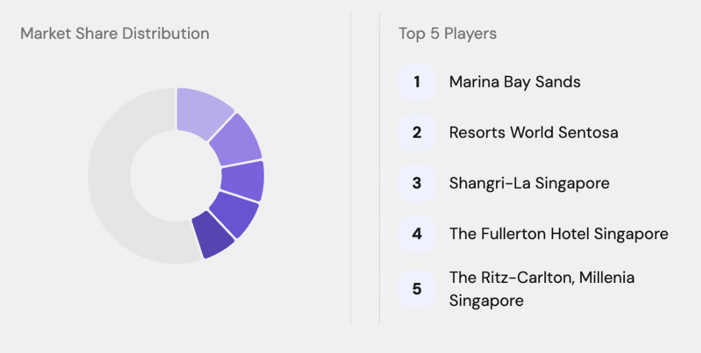
2. Problem Identification
2.1 Iterations: Manpower and Satisfaction Stagnation
Based on interviews across various hotels in Singapore, manpower shortages and retention were identified as common issues (Appendices C and E). The shortage often leads to cognitive overload among staff, preventing them from meeting certain service standards (Appendix A). In recent years, this has led to a stagnation in guest satisfaction, driven by rising customer expectations. Iterating through these problems led to the conclusion that all these issues contribute to the overarching problem faced by the industry partner: revenue generation.
2.2 The Revenue Problem
While revenue can be increased by decreasing costs, this can compromise the quality of luxury services in an industry already struggling with external factors driving up cost. Hence, profit generation will be the aim of this project. Revenue in hotels is measured by Revenue Per Available Room (RevPAR) R22. It is represented by:
Where ADR represents Average Daily Rate of the hotel and OR represents Occupancy Rate. While there are common factors affecting both, such as location, season, economic conditions, and competitor landscape, the classification (star rating) of a hotel significantly affects ADR while reputation and reviews affect OR R22, R23.
2.2.1 ADR and Service Quality
Ratings of hotels depend on their quality, and are assessed by the Leading Quality Assurance (LQA) framework R4. While these criteria span across emotional intelligence, service quality, efficiency, and more, a large number of standards strongly link to personalized service. Currently, there is a gap in delivering human-centered service, with the partner claiming that staff fail to notice emotional cues like sick guests in the lobby.
2.2.2 OR and Customer Satisfaction
Hotel reputation and reviews depend on customer satisfaction. Satisfaction drives increased retention rate and guest acquisition–measured by an increase in Net Promoter Scores (NPS) R54. This subsequently increases hotel occupancy rate. Satisfaction significantly increases loyalty, as shown by the guest survey (Appendix B) alongside Marriott membership data (Figure 2); membership is not the same as repeat-guest occupancy. However, the industry partner is facing “single-digit retention rates” (Appendix D); this partner-reported figure has not been independently validated.
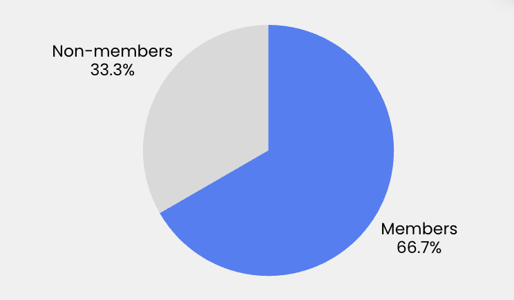
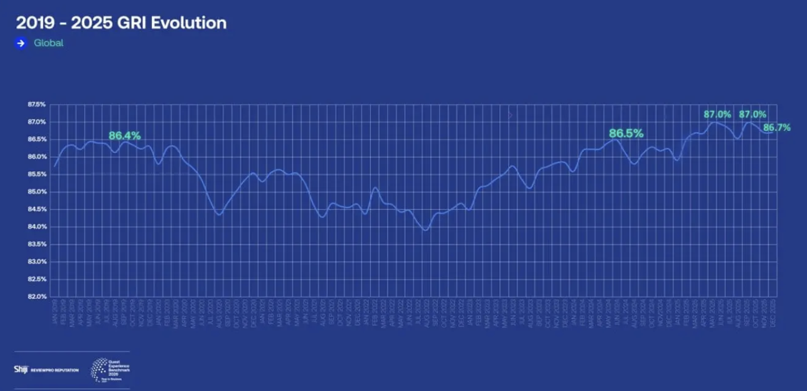
Guest satisfaction has fluctuated rather than risen consistently over the past few years (Figure 3). The Global Review Index chart is a descriptive trend, not evidence that rising expectations caused the changes. Different guest demographics expect different services and amenities R12. Scaling automations to increase overall satisfaction leads to standardization, failing to address the unique expectations of the individual R13.
2.2.3 The Need For Personalization
Hence, it is established that revenue depends on both service quality (driving ADR), which demands interpersonal service and customer satisfaction R2 (driving OR) which requires addressing individual expectations. Synthesizing these needs leads to the demand for personalization in the luxury hotel industry.
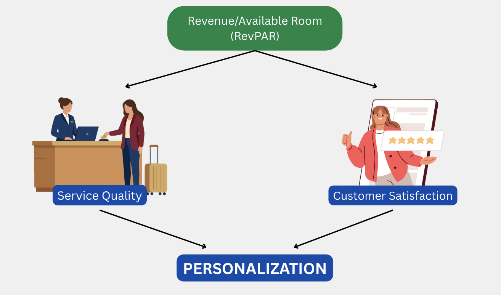
This is further supported by the following:
86% of travelers sought at least 1 aspect of their experience to be personalized R14
61% of consumers are willing to spend more for personalized experiences R15
67.6% of respondents (25/37) rated personalised services 4 or 5 out of 5 for their influence on willingness to recommend a hotel (Appendix B).
2.3 Current Guest-Information Workflow
2.3.1 Accor Customer Digital Card (ACDC) Case Study
The Accor Customer Digital Card case study maps a five-stage information cycle. A general manager retrieves guest details from a database and communicates relevant points in a morning briefing. Hard-copy or WhatsApp notes can serve as a fallback when staff need to check a detail. During service, staff draw on the briefing or profile while learning new preferences or concerns through conversation. They enter newly learned details into the database afterwards, potentially making them available for later encounters. R55 This sequence is a case-study mapping, not a measured description of every hotel or of PARKROYAL's daily operations.
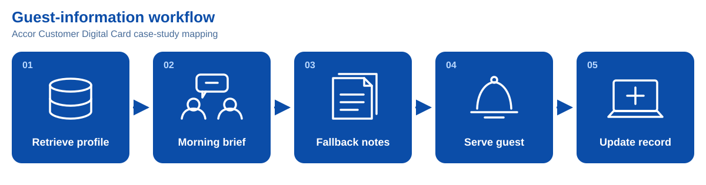
Information must cross several human and system handoffs in this cycle. Staff need to remember or find the right profile, select a detail relevant to the immediate interaction, and record new information accurately enough for another employee to use. A stored profile therefore has limited service value if access is slow, consultation interrupts conversation, or updates arrive after the next encounter.
Information may already exist but remain difficult to act upon because it is separated from the service task, carried in a briefing that staff must remember, or entered only after the encounter has ended. Each route puts a different demand on staff: recall, search, or delayed documentation. These demands are especially consequential during short face-to-face exchanges, when there is little time to recover a missed detail.
2.3.2 The Gaps
The guest-journey mapping identifies three related gaps. First, recognising a guest from a description or profile photograph and filtering the profile can be difficult; a stored preference may consequently be missed. Second, consulting notes or a phone during conversation can divert attention from the guest while staff are expected to listen and engage naturally. Third, a busy employee may postpone an update, and different staff may phrase the same information differently, reducing its reliability for colleagues. R55
Guest identification and information relevance are distinct problems. Finding a profile quickly is insufficient if it belongs to the wrong person; finding the correct profile is also insufficient if staff must search through unrelated details while serving the guest. A preference about a drink may matter at the lounge, whereas a room-setting preference may not. The design need is therefore timely access to the right information for the right guest and task. This is a design inference from the mapped journey, not evidence that a particular retrieval method will improve service.
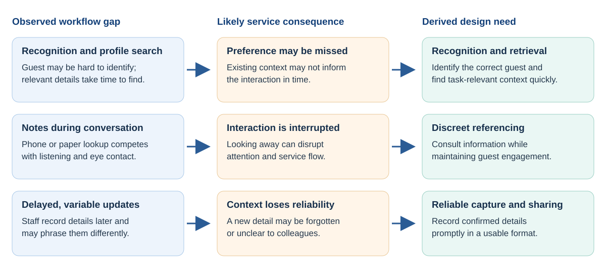
The resulting needs are recognition and rapid retrieval, discreet referencing during service, and prompt, consistent capture of confirmed information. They form a connected information cycle: the correct guest must be identified before a cue is useful, and a new detail must be recorded in a usable form before it can support a later interaction.
2.3.3 The First-Time Guest Problem
Returning guests may have accumulated preferences and established rapport; first-time guests may have booking or pre-arrival details but less recorded service history. Their initial encounter is therefore an important opportunity to learn a specific, guest-confirmed detail. If that detail is captured and shared in time, another employee could use it during the same stay. If it remains only in one staff member's memory, the next interaction begins with much of the same information gap.
This creates a possible feedback pattern: limited history offers fewer cues for tailoring service, while failure to capture what is learned leaves the history limited. The pattern is a hypothesis, rather than an established explanation of guest behaviour. It also shows why the first stay is a useful test case. The goal is not to build a complete long-term profile immediately; it is to determine whether one relevant detail from an early interaction can reach a later employee accurately and in time to inform their service.
An industry-partner account reported a single-digit first-time guest retention figure, but its cohort, definition, and time period were not supplied. It is treated here as a preliminary observation, not a verified baseline or evidence that limited personalisation caused low retention. R55 The proposed same-stay handover is consequently a design opportunity to test, rather than a demonstrated route to higher return visits.
2.4 Design Challenge
The problem is to make guest context available across encounters while preserving natural service. For the first employee, this means recognising the guest and recording an explicit preference or concern with sufficient context. For the next employee, it means finding the correct, relevant detail quickly enough to act on it appropriately.
The intended value differs across the service relationship. Staff may spend less effort recalling briefings or searching notes; guests may experience greater continuity between interactions; and the hotel may have a more dependable basis for consistent personalised service. The next stage must establish whether faster access and more reliable sharing actually help staff make better service decisions without adding disruption or creating incorrect guest associations. These needs lead to the project's design question:
How might we enable luxury hotel staff to capture, share, and access relevant guest information seamlessly so that they can deliver consistent, personalised, high-quality service?
The broader case for personalised hotel service leads to an operational question: can staff obtain and use relevant guest information at the moment it is needed? In a Medallia survey of 1,749 hotel guests, 23% rated their recent stay 9 or 10 for personalisation, while recall of the surveyed in-stay elements averaged 46%. Perceived personalisation was associated with satisfaction, although the survey does not establish that access to guest data caused either outcome. The finding directs attention to service encounters, where recorded information must become a useful staff action. R2, R15
3. Aim, Scope, and Requirements
3.1 First-Time Guest Use Case
The selected use case follows a first-time guest whose early, confirmed preference can be used by another employee later in the same stay. The concept does not assume that every new guest has no information, nor that one comment is an enduring preference. A one-off request should remain stay-scoped unless the guest or an authorised record confirms otherwise. Semester 1 builds recognition, retrieval, and cue-display foundations for this handover in a lounge scenario with fictional profiles and manual activation. Production PMS integration, autonomous allergy decisions, and demonstrated service outcomes remain out of scope. R55, R57
3.2 Functional Requirements
The functional requirements define a short, reviewable handover. Capture and processing prepare guest context; display selects information relevant to the current service moment.
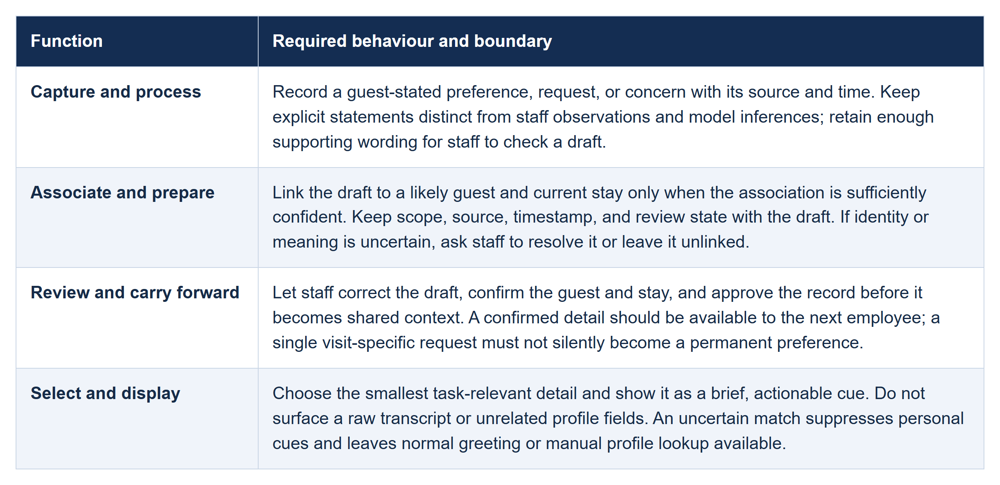
Figure 7. Proposed same-stay guest-context workflow: capture, staff confirmation and sharing, retrieval, and service adaptation. Prepared-profile retrieval and display are demonstrated; the complete handover remains proposed.
This makes the first-time guest goal explicit: an early, confirmed detail can support another interaction during the same stay, even before a long service history exists. The complete capture-to-approved-record-to-next-employee loop is proposed; current prototypes demonstrate narrower recognition, prepared-profile retrieval, and display stages. R55, R57
3.3 Design Criteria
The project-selected PARKROYAL F&B LQA subset anchors the service behaviours: acknowledge a guest within one minute of lounge entry and offer to take a drinks order within three minutes of seating. These are staff-action windows, not cue-processing targets. The 15-item table is a departmental subset, not a complete audit or official LQA score; LQA is distinct from hotel star classification. R62, R4
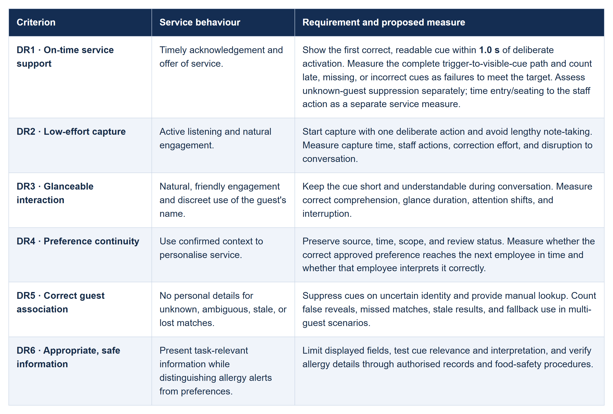
Cross-cutting safeguards. DR5 and DR6 are explicit design requirements, not optional features. Their safe-association, data-minimisation and manual-fallback conditions apply across capture, processing and display. An allergy cue can prompt a check; staff must verify the authorised guest record and the relevant menu or kitchen source before advising the guest.
Timing note. The 1.0-second requirement covers deliberate activation to the first correct, readable cue, including capture, recognition, transfer, and rendering. It is a project engineering target, not an LQA standard. Shiwa et al.'s communication-robot study informs the one-second response rationale by analogy; it does not establish a smart-glasses standard. Four successful warm Android frame commits averaged 1.18 s, so the current prototype does not meet the requirement. Independent trials, failures, p50/p95, and physical lens visibility still need evaluation. R57, R58, R68
3.4 Concept Generation and Selection
The concepts address the same first-stay scenario: a guest shares a preference early in the stay, and another employee needs it during a later service interaction. We compare complete workflows while keeping guest information, task, and staff review support as consistent as possible. R55
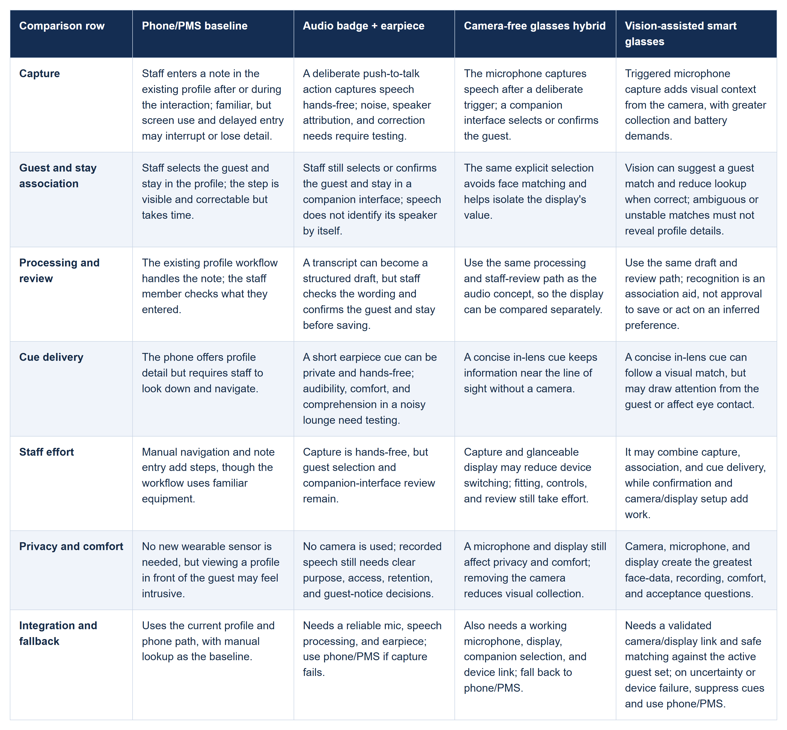
The row-by-row comparison makes the trade-off clearer: audio capture avoids a camera but still needs reliable speaker and guest association; glasses can provide an eye-line cue, and the vision-assisted version may reduce manual lookup while introducing face-matching risk. The camera-free glasses variant is a useful control: comparing it with audio tests the display, while comparing it with vision-assisted glasses tests whether visual matching adds enough value to justify its cost and risk. These are hypotheses, not measured advantages.
For a fair evaluation, give each concept the same guest information, service task, and staff-review support. Measure capture time, correct guest/stay association and errors, unsupported notes, time to a usable cue, staff interruption, comprehension, privacy and comfort, and effort. Treat privacy and safe association as pass/fail constraints; score other criteria only after weights are justified with staff or partner input. For each comparison row, record capture time/correction effort; correct and false associations; evidence-supported notes/edit time; cue latency/comprehension; interaction steps/interruption; privacy/comfort; and integration failures/recovery. A morphological chart should generate combinations of capture, association, processing, and output methods; a separate decision matrix should assess the complete workflows.
Smart glasses remain the concept selected for further prototyping because they could combine hands-free interaction, contextual association, and a concise cue in the service moment. The current comparison does not establish a winner: there are no weighted scores or comparative hotel-staff results yet. The glasses direction remains subject to the camera/display integration gate and the design requirements in Section 3.3.
Existing products establish substantial prior capability. Oracle OPERA Cloud documents profiles containing preferences and images; hotelkit supports guest-request assignment, escalation, and follow-up; SoftServe has demonstrated wearable AR face identification, including VIP recognition. Face recognition on glasses and shared guest records are therefore not themselves novel. The project's contribution is to investigate a same-stay service workflow linking low-effort context capture, checked association, and timely presentation of a relevant cue. The lounge proposal additionally explores an active lounge cohort bounded by entry and exit; the implemented glasses demo recognises against its loaded gallery, not that card-derived cohort. R5, R6, R7, R57, R60
3.5 Literature-Based Benchmarking of Visual and Audio Cues
We benchmarked the visual and audio concepts against published studies of competing speech, dual-task performance, and notifications during face-to-face interaction. This qualitative comparison considers preserving listening, understanding cues, recovering missed information, and controlling attention demands. The cited studies use controlled tasks rather than hotel staff; they inform hypotheses for a matched prototype comparison.
Spoken earpiece cues introduce another speech stream into a service conversation. Brungart (2001) demonstrated interference between simultaneously presented spoken phrases. This suggests that a spoken cue delivered while a guest talks could compete with information staff need to hear. A short visual fact lets staff consult the information and choose their own wording when replying. This application to lounge service remains a design inference. R69
Visual presentation also demands attention. Lewis and Neider (2016) found that Google Glass information disrupted concurrent visual search. Ward et al. (2023) found interference from both head-mounted and audible word presentation during manual tracking. Consequently, visual cues should be brief, relevant, appropriately timed, and available for a short recheck. R9, R72
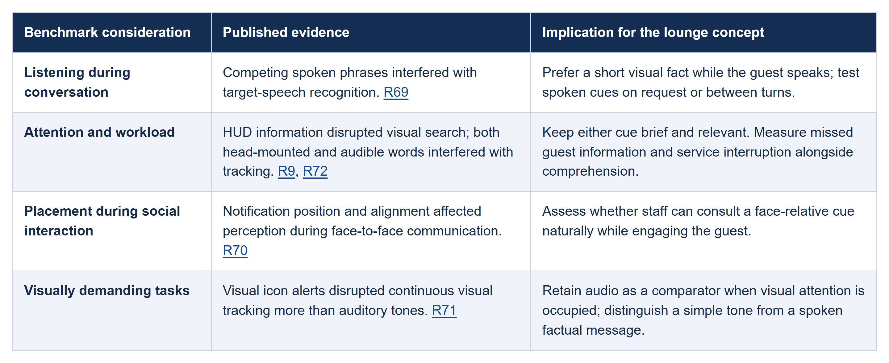
For this conversation-led lounge task, we prioritise short visual facts to avoid adding another spoken message while the guest talks. Audio remains an alternative for visually demanding tasks, and spoken prompts could be delivered on request or during a pause. Google's AI-glasses guidance supports concise, glanceable elements that appear when needed. R8
A fair comparison would deliver the same guest-stated tea preference through a short visual cue or equivalent spoken phrase, keeping capture, guest association, and staff review constant. Measure comprehension, missed guest details, service action, conversational interruption, rechecks/replays, and comfort. This tests whether the output channel helps service, rather than whether one condition supplies more information.
4. System Architecture and Prototype Development
4.1 Solution Overview And Staff Journey
Section 3.4 takes smart glasses forward as a prototyping direction for combining guest recognition with information available during face-to-face service. From the employee's perspective, the concept is simple: look towards a guest, see their name and useful context, and use it to make an appropriate offer without searching a separate profile.
Figure 8 identifies the core technology. SQLite stores guest profiles and preferences; reference photos are stored separately. At startup, InsightFace buffalo_l detects and aligns reference faces, then ArcFace converts them into normalised 512-number vectors cached in RAM. A live face vector is compared with these references without reprocessing every photo. Initially, the camera would stay on continuously, capturing and analysing every frame. R57
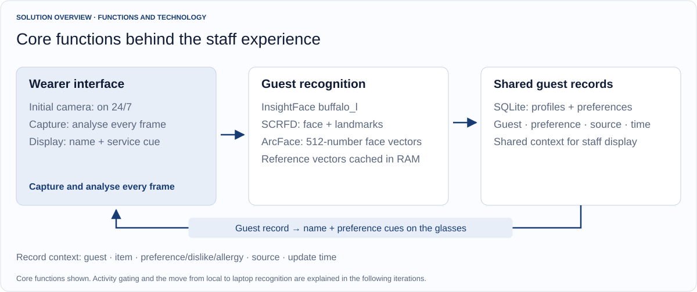
Proposed staff journey. The first staff member taps the glasses to start. A stable, unique match can surface a relevant preference or allergy cue; without one, the system shows no personal details and staff greet normally, ask the guest, or use the phone/PMS. Staff confirms today's preference in conversation. An allergy cue prompts a check against the authorised guest record and menu or kitchen source before staff explains a risk or suggests an alternative. Afterward, the system can prepare a time-stamped draft grounded in the guest's words; staff edits it, confirms the guest/current stay, and approves it. The next employee can retrieve the approved detail when relevant. This end-to-end handover remains proposed.
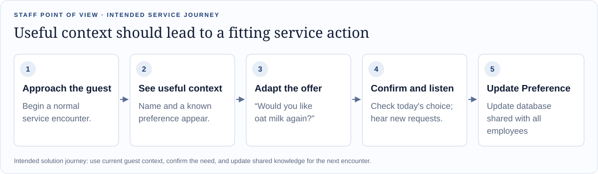
The present glasses demo covers manual activation, recognition against a loaded gallery, prepared-profile retrieval, and cue rendering. Audio capture, confirmed guest/stay association, staff-approved profile writes, next-shift retrieval, and task-ranked cue selection remain to be integrated; Chapter 5 assesses the demonstrated path.
4.2 Capture
Capture iterations use measurable tests: battery depletion, traffic, silence-timeout duration, latency, and guest facts matched against expected answers. The intended path stores an explicit, time-stamped statement as a sourced draft, associates it with a likely guest/stay, and tracks scope and review status. Staff approval is required before the shared record is updated. Display ranks checked context by location, task, urgency, and validity. Text extraction is explored separately; audio capture and reviewed updates are not integrated.
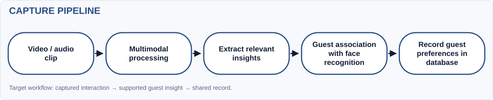
4.2.1 Temple-touch Activation
Continuous capture requires less staff input but keeps processing active between encounters. Reported battery life was only slightly over an hour, insufficient for a hotel shift. Temple-touch activation trades a single tap for longer battery life. R55
The timeout balances battery use with DR2, low effort: one tap starts capture, speech sustains it, and 15 seconds without speech ends it automatically, without repeated taps or a separate stop action. Expiry stops camera/microphone activity, cancels requests, and clears cues. Speech cannot activate idle capture. R57
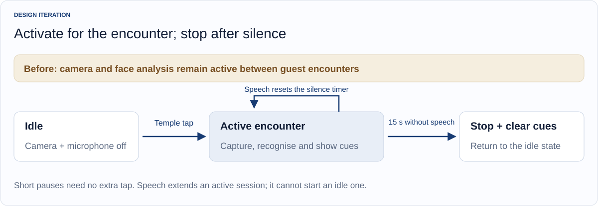
Local WebRTC voice activity detection distinguishes speech-like activity from silence. The timeout was tested and verified at approximately 15.4 seconds in a quiet-room setting; restaurant and front-desk conditions still need verification. R57
The 20-minute battery experiment used a one-minute conversation every five minutes. Including the 15-second silence period gives 75/300 seconds of scheduled activity, or 25%. R55, R61
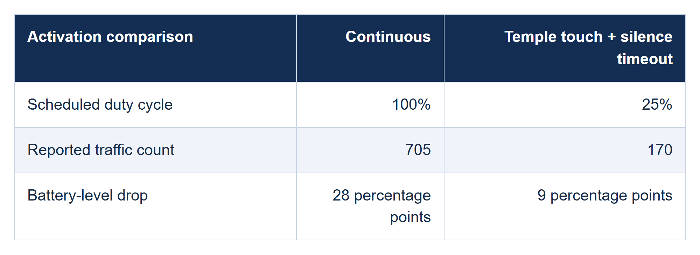
Traffic fell by 75.9%; battery depletion fell by 19 percentage points, approximately 68% relative depletion. This measures battery-gauge change, not electrical power. R55, R61
4.2.2 Selective Server Processing
On-device photo recognition averaged 1,927.9 ms, longer than the 1.0 s end-to-end cue target even before camera and display time. SCRFD and ArcFace recognition dominated the component path, motivating selective offloading. Camera handling, tracking, crop preparation, and rendering remain local; the laptop handles recognition and lookup. This targets DR1 by keeping position updates responsive; a separate battery benefit remains unmeasured. R57, R59
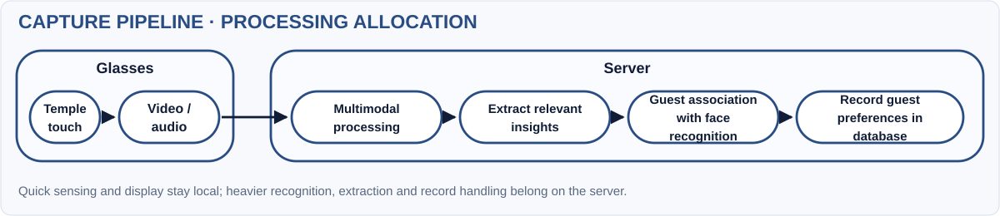
In a 15-probe warm photo test, Wi-Fi offloading averaged 1,350.6 ms, about 30% below on-device recognition at 1,927.9 ms. The chart compares this isolated component, not full cue latency or p95 performance. Its protocol, observed ranges, and component timings are in Appendix L. R59
The offloaded mean of 1,350.6 ms still exceeds the 1.0-second target, even though this test excludes camera capture and display. Recognition currently runs on one CPU laptop. Moving it to a dedicated server with greater processing capacity, or testing accelerated inference, could reduce processing time. These gains remain unmeasured; capture, image preparation, and scheduling also need optimisation, followed by complete-path retesting (Section 5.2).
4.2.3 Independent Preference-Extraction Testing
Text extraction is tested separately for DR4, preference continuity; written transcripts are not connected to glasses audio. Two synthetic conversations contained three expected guest facts. Qwen and Gemma each matched two facts, with Qwen fastest at 67.2 seconds per transcript. All models produced valid JSON, but Gemma misclassified a complaint and a safety question. These small tests provide examples for refinement, not general accuracy estimates. No result is written to a guest record; the full model comparison and checks are in Appendix L. R55, R67
Next, improve text-only extraction, then compare it with video from the same interactions to test whether visual context adds useful, supported detail. Evaluate audio transcription separately.
4.3 Display
Display testing uses user feedback on placement, readability, and relevance. The pipeline identifies the guest, retrieves their record, and returns cues.
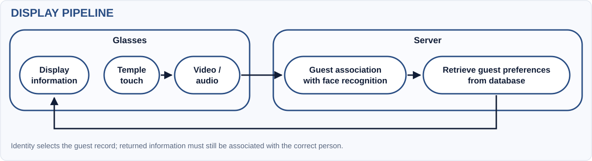
4.3.1 Positioning Information Beside The Guest
Initially, cues occupied a fixed display position. User feedback and prototype validation prompted face-relative placement and central guest selection, aiming to reduce looking away from the guest and competing details from several visible faces. These iterations address DR3, glanceability. R55, R61
Google ML Kit, an on-device machine-learning toolkit, detects faces and tracks positions locally; InsightFace identifies the guest. The central 30% of both view axes defines the selection region, choosing the face nearest its centre. This aims to show preferences for the guest receiving the employee's attention, avoiding details for everyone visible. Selection uses where the glasses point; it does not measure eye contact. R57, R11
Face coordinates also allow cropping before image preparation, removing a 2.2–2.4-second full-frame preparation delay. In an earlier SFace-model test, 14 uploads averaged 200 ms from image-analysis callback to server response. This supports the cropping change for DR1; the timing excludes tap handling and display and is separate from the current-model benchmark. R57
Before · fixed position
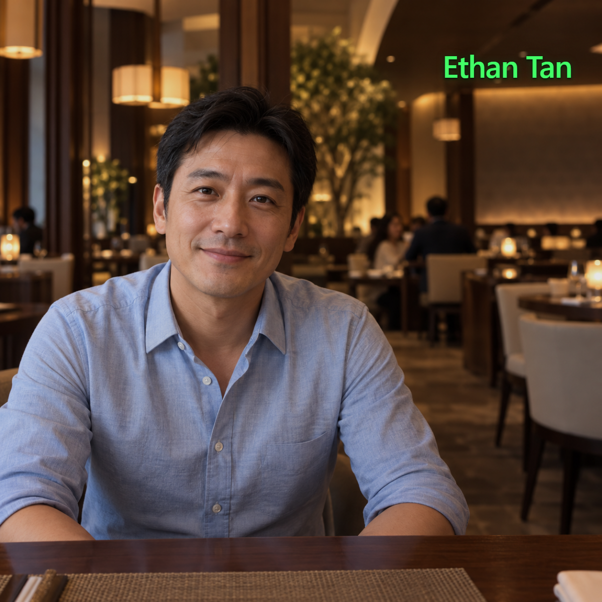
4.3.2 Replacing Descriptions With Concise Icons
Even beside the guest's face, long descriptions require staff to read while listening. To support DR3, the display instead shows a name and up to two icons. DR6 requires preferences and allergy alerts to remain distinguishable. R55
Before · written description
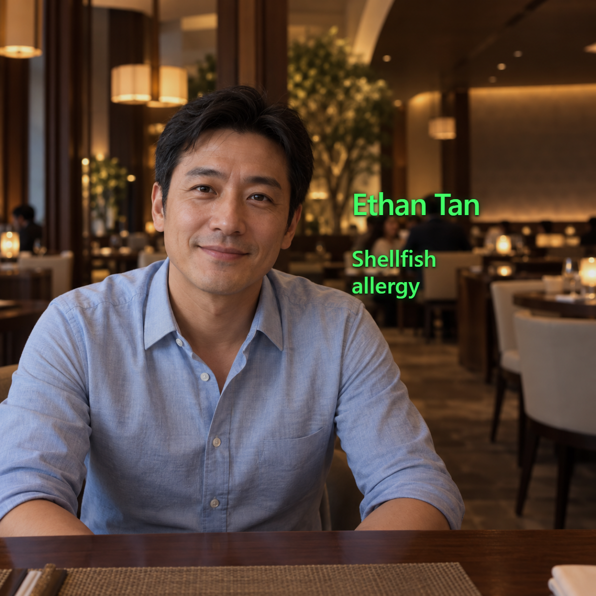
The main icon shows an item, such as coffee; its corner marker means preference (heart), dislike (crossed-out heart), or allergy alert (warning triangle). Icons appear beneath the name and are stored on the glasses, avoiding extra downloads. R57
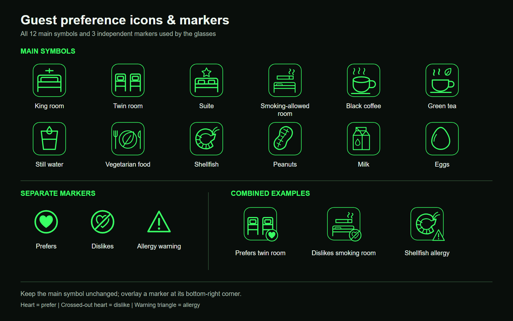
The prototype shows at most two icons, puts allergy alerts first, and hides personal details when a guest is unrecognised or the face association is lost. Automated checks verify placement and that names and icons disappear together. R65
Concise information follows display guidance, but short symbols can still distract. User testing must check whether people understand the icons without coaching and use them without interrupting conversation. R8, R9
4.3.3 Retrieving Contextually Relevant Preferences
The next proposed iteration selects information to fit the moment. Face recognition determines whose record to retrieve; conversation and service context determine which details to show. Location, task, urgency, and validity could rank the candidates: during breakfast, for example, a checked drink preference should take precedence over an unrelated room arrangement.
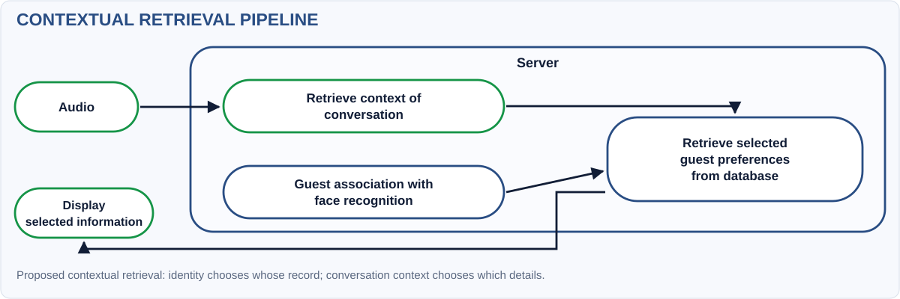
This addresses DR3 and DR6: an easily understood room icon can still be unhelpful during a drinks order. The proposed filter would select relevant, checked preferences from the shared record (DR4), while retaining priority for allergy alerts under the hotel's verification rules. R55
Before · unrelated room preferences
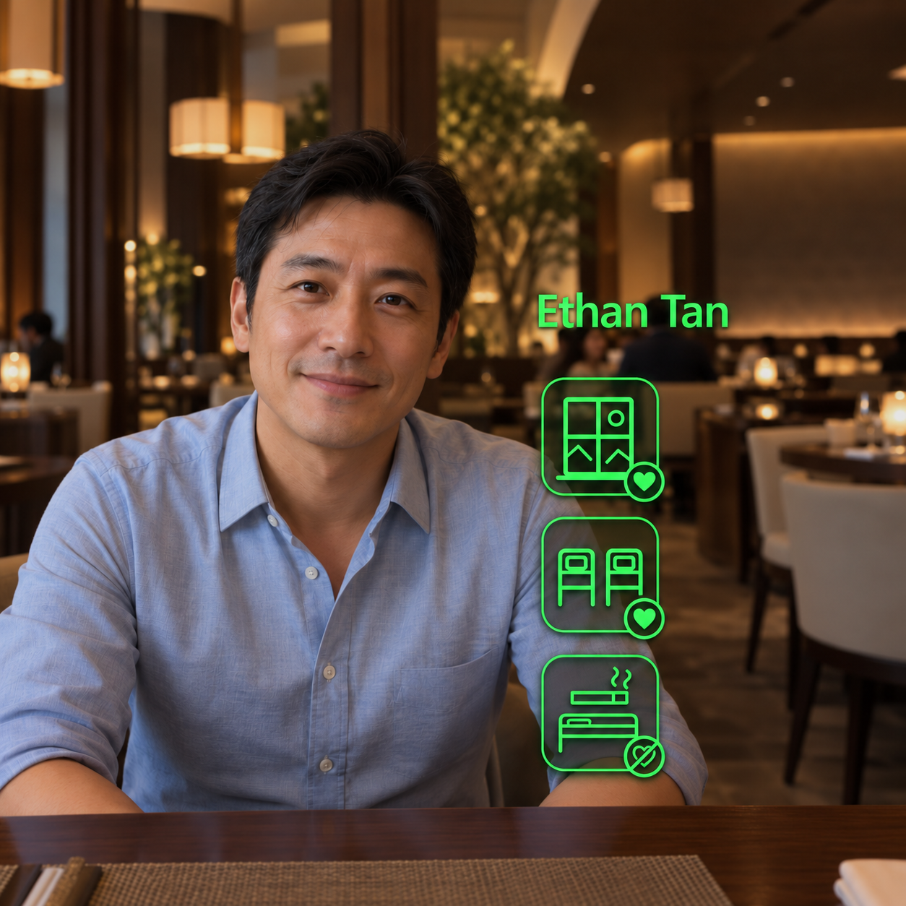
Proposed after · relevant drink preference
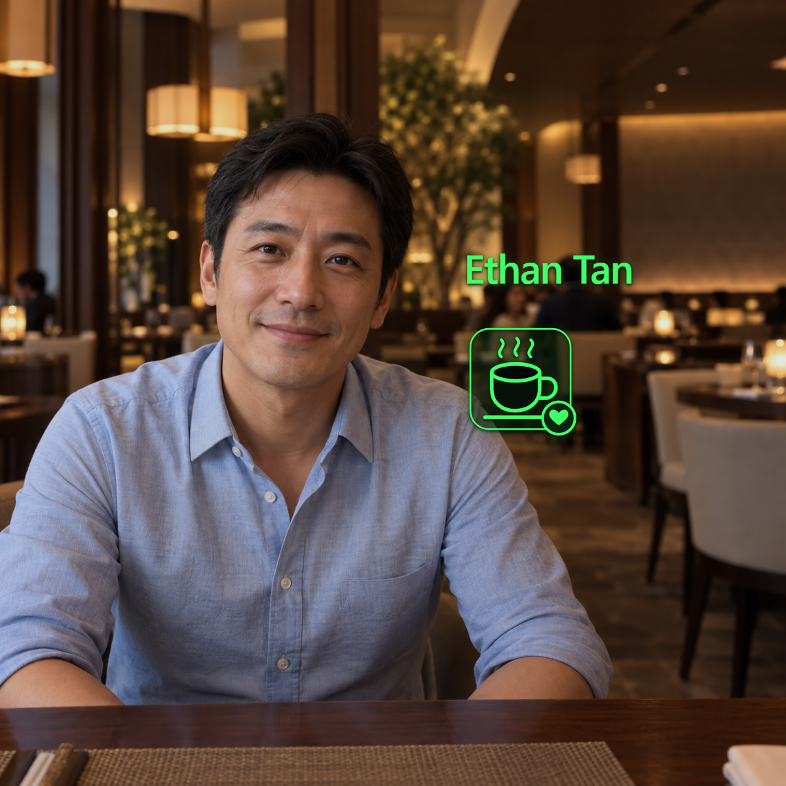
Current status. The prototype shows up to two stored reminders, with allergy alerts first. It does not yet interpret conversations to select preferences; microphone activity only controls how long the session runs. R57
Testing should compare the same scenarios with and without filtering: does the system identify the topic correctly, show useful information, or hide something staff need? This tests relevance as well as readability.
4.4 Complete System Architecture
Figure 20 combines the iterations in the Rokid RV101 → Wi-Fi/HTTP → laptop → display architecture. Solid paths describe current functions; the dashed extension is planned. R64
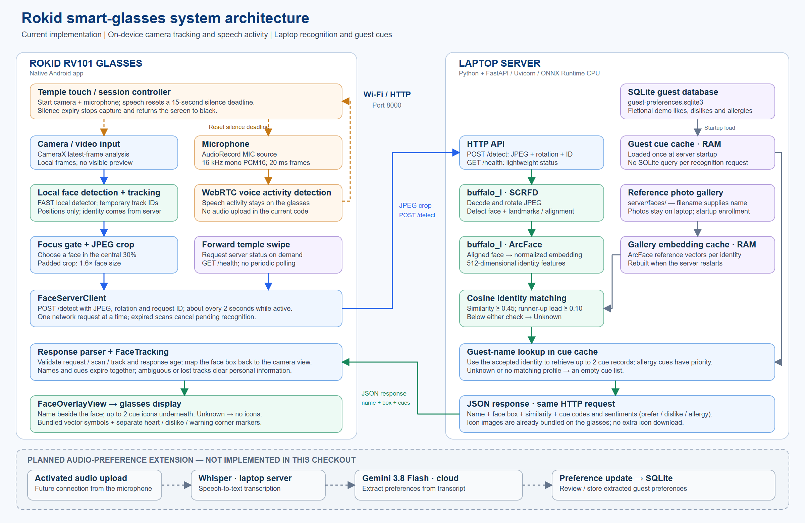
Communication. The glasses send one recognition request at a time to avoid a queue of old images. Late results are ignored so outdated details are not displayed. A swipe checks the server connection. R57
Recognition. The server compares faces with stored references. A match needs at least 0.45 similarity and must beat the next candidate by 0.10. Lowering the minimum from 0.50 reduced unrecognised results but may admit wrong matches. These scores measure similarity, not confidence percentages. R57, R65
Shared records. The server loads guest profiles into memory at startup. This speeds lookup, but database edits require a restart before displayed information changes. DR4 therefore still needs reliable updates reaching another employee. Unique guest IDs should replace name-based lookup to distinguish guests with the same name. Incoming camera images are not saved; unrecognised guests receive no personal details.
The dashed extension would add audio upload, local Whisper transcription, Gemini extraction, and staff-reviewed database updates. These are not connected to the glasses workflow yet. The separate card-entry prototype is also not integrated. R60, R64
5. User Validation & System Evaluation
5.1 User Validation
A formative walkthrough with 10 non-hotel participants examined activation, usefulness, and cue use. It supports problem finding, not proof of improved hotel service. R55
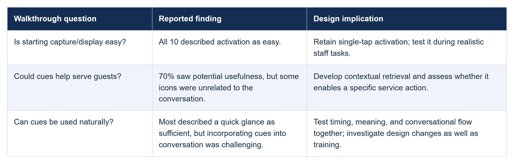
Understanding an icon and using it in conversation are different tasks. A participant may recognise a coffee preference but be unsure when to mention it. The feedback connects shorter icons (Section 4.3.2) with relevant selection (Section 4.3.3): staff need information that fits the current interaction.
This non-staff study did not compare profile lookup or measure gaze and attention, so it cannot establish improved service or reduced distraction.
5.2 Design Requirements And Whole-System Testing
Testing covers tap → guest selection → recognition → profile retrieval → display. Conversation-to-approved-update and next-employee use remain incomplete. Findings map to Section 3.3's requirements.
On 3 November, 13 live activations included quick repeat taps while capture was already running. Five produced a recognised name and icons in the app's drawing process; four also recorded an Android frame commit, confirming a completed frame was submitted for display. These four averaged 1,180 ms, median 1,198.5 ms, range 974–1,349 ms. R58
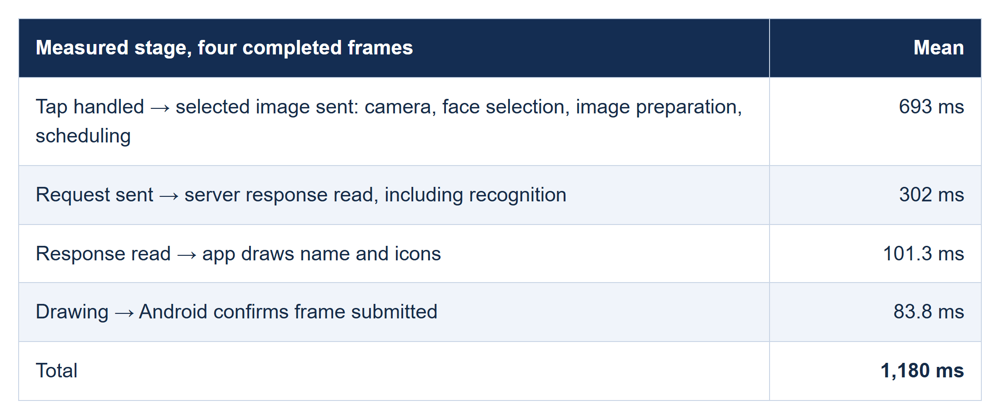
Server recognition took 177.5 ms within the 302 ms request stage; it is not an additional delay. The largest delay was before sending the image, so optimisation must address capture and selection as well as server speed. Another activation took 4,412 ms to draw information without a completed frame recorded before the next tap; eight had no accepted name/icon output before another tap. Repeat taps can interrupt processing, so these counts do not establish a success rate. Independent starts from idle and physical on-lens timing still need testing.
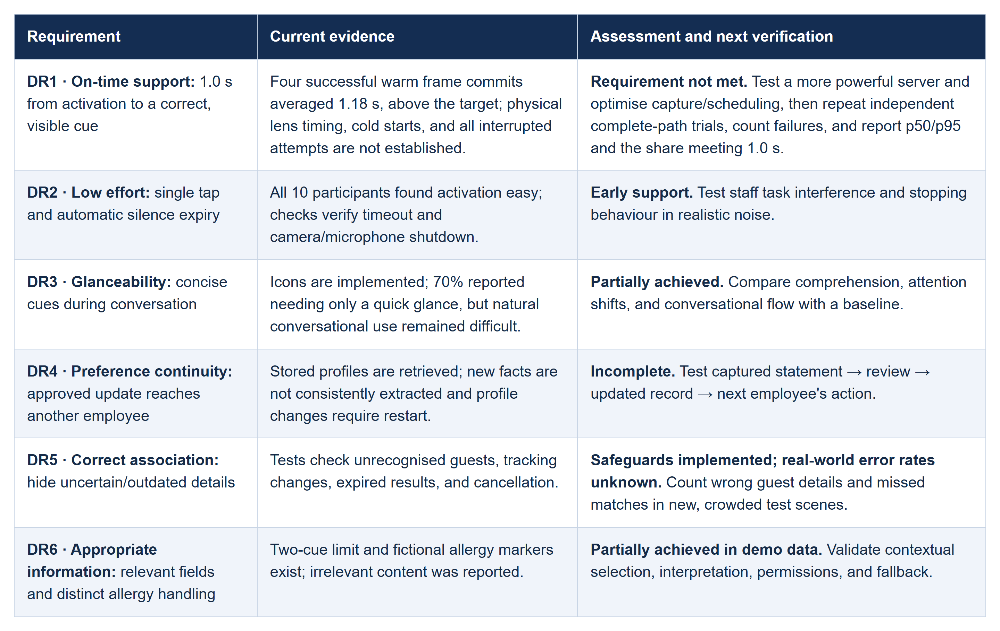
Retrieval and display work; the service benefit and complete handover still need evaluation. The photo benchmark and four live frame measurements cover different stages and must be reported separately.
5.3 Limitations, Guest Acceptance, and PDPA Considerations
Guest acceptance. The team's exploratory Dream Hotel Experience survey (Appendix B) received 39 responses overall. Of the 37 who answered a question about comfort with hotels collecting and storing data—including facial images, restaurant orders, and service-use records—15 (40.5%) rated their comfort 4 or 5, 15 (40.5%) rated it 1 or 2, and 7 (18.9%) rated it 3. Thus, the sample does not demonstrate majority high comfort with this combined collection proposal. Separately, of 38 respondents, 44.7% preferred staff to remember explicitly stated preferences and 31.6% preferred to be asked each time. These are preferences expressed in a small, non-representative survey, not consent to facial recognition, recording, or deployment. A separate 40.7% preference-storage figure concerns a different question and must not be conflated with this survey. Appendix B
Personal data protection. Under Singapore's Personal Data Protection Act (PDPA), a hotel deploying the concept would need to establish an appropriate lawful basis and comply with applicable obligations, including notification of purposes, consent where required, purpose limitation, reasonable security arrangements, retention limitation, and access/correction processes. Camera-derived facial templates, linked guest identities, and conversation records create particular risks of unwanted identification, disclosure, or reuse beyond the service task. The PDPC biometric guide provides relevant risk-management guidance but is written for security applications and does not constitute approval of this hospitality use. The team must obtain hotel and university review before real-person collection and assess whether a less intrusive manual or camera-free workflow could meet the same need. R10
Practical safeguards and current gaps. Future testing should use fictional profiles and consenting role-play participants until an approved protocol exists. The system should collect the minimum information needed, restrict access by staff role, define deletion schedules, document any service-provider transfers, and prevent personal cues on uncertain identity. Staff must approve guest/stay association and corrections before any shared record is updated. Allergy alerts must be checked against an authorised record and food-safety process, not acted on from a face match. The current prototype uses voice activity detection but does not integrate transcription, approved preference writes, or context-aware retrieval. Its recognition accuracy, data governance, long-shift reliability, physical lens latency, and effects on real staff service remain unvalidated. R57, R58, R10
6. Next Steps and Validation Plan
The next semester moves from a working recognition-and-display proof of concept toward a complete, reviewable same-stay guest-context handover. The schedule below follows the team's January–May development roadmap; it is a planning target, not evidence of completed work.
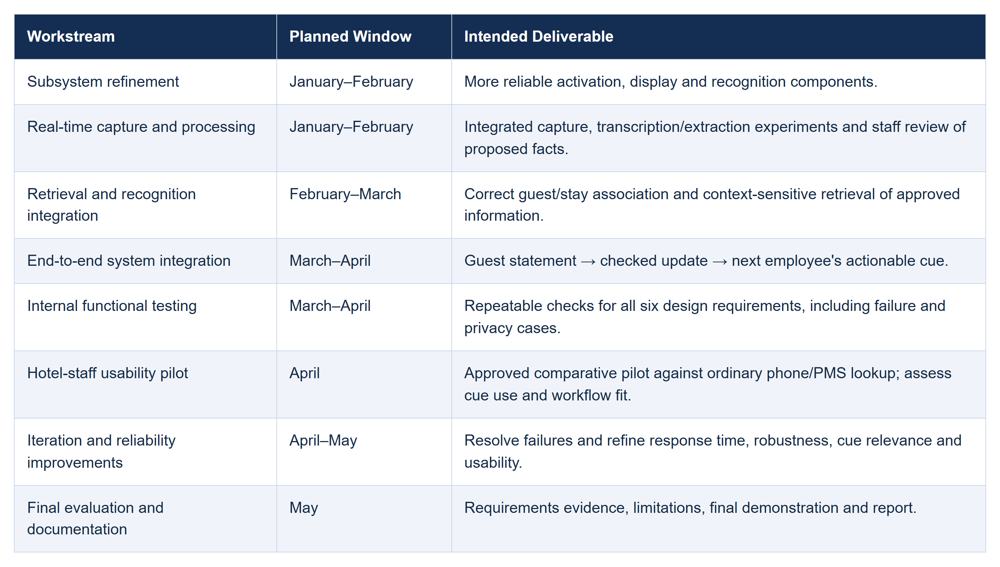
Priorities. First, refine preference extraction and implement contextual retrieval so staff see only information relevant to the service moment. Second, work with hotel staff to identify training needs and practical prompts that help employees confirm guest preferences naturally. Third, investigate evidence-linked LQA support and service-recovery prompts as a possible later extension; any scoring must be transparent, human-reviewed, and evaluated separately rather than treated as an implemented capability. The current prototype also falls short of the 1.0-second response requirement: evaluate a dedicated server with greater processing capacity than the current laptop, together with capture and scheduling improvements, and measure the complete path again.
Evaluation gates. All six design requirements (DR1–DR6) must be assessed with explicit measures. Compare the same lounge scenarios using ordinary profile lookup and glasses, counterbalance task order, count missed or incorrect cues, measure full-path latency including failures, and record staff comprehension and interaction disruption. No wrong-profile disclosure in the defined test set, verified allergy handling, an approved data-governance protocol, and a reliable manual fallback are prerequisites for any real-guest pilot. The sample size and test conditions must accompany any performance claim. Appendix K
7. Conclusion
This project has identified a gap in persnalized service in luxury hospitality, and aims to address it with a technology-driven solution. The team has demonstrated a manually activated smart-glasses prototype that can recognise enrolled demo guests and display concise fictional cues. Early battery, latency, extraction and walkthrough results inform the design, but they do not establish a complete staff-to-staff handover or improved hotel satisfaction, retention, or revenue.
The next stage will test whether explicit, guest-confirmed information can be captured, safely associated with the correct stay, reviewed, and retrieved when another employee needs it. The club lounge provides a bounded setting for this comparison against existing profile lookup. Success will depend not simply on faster recognition, but on relevant cues, natural staff interaction, reliable fallbacks and responsible handling of personal data. These findings will determine whether the wearable approach provides sufficient service value to justify its operational and privacy costs.
8. Team Contributions
Neha Rajan — Problem investigation and framing; interviews and surveys, hotel/business context, service quality, the rationale for personalisation, report documentation, and presentation UI design.
Nigel Yeo Tong Wei — Problem investigation and framing; current guest-information practices, first-time guest needs, and the design challenge.
Wong Weng Hong — Solution development; functional requirements, concept comparison, and the proposed staff/guest journey.
Tan Ping Hui — Solution development; technical implementation, prototype iterations, testing, and the next development steps.
The interim contribution is an implemented service-support mechanism and a clearer account of what must be tested next. Whether the mechanism improves hotel service remains the central evaluation question for the next stage.
References
R1. Lei, S. S. I., Wang, D., Fong, L. H. N., & Ye, S. (2024). “Recipe for perceived personalization in hotels.” Tourism Management, 100, 104818. Institutional publication record and abstract · DOI.
R2. Medallia Market Research (2024). Understanding Personalization Efforts in the Hospitality and Retail Industries. Original report. Vendor-produced U.S. guest survey.
R3. Piccoli, G., Lui, T.-W., & Grün, B. (2017). “The impact of IT-enabled customer service systems on service personalization, customer service perceptions, and hotel performance.” Tourism Management, 59, 349–362. Author-hosted article · DOI.
R4. LQA. Hotel assessments. Public description of its quality-assessment framework; accessed 10 November 2026.
R5. Oracle. OPERA Cloud 25.4: Profiles. Official product documentation; accessed 10 November 2026.
R6. hotelkit. Guest services. Vendor-described request assignment and complaint follow-up; accessed 10 November 2026.
R7. SoftServe. Hands-Free Face ID. Public AR identification demonstration; accessed 10 November 2026.
R8. Google. AI Glasses design principles. Official design guidance; accessed 10 November 2026.
R9. Lewis, J. E., & Neider, M. B. (2016). “Through the Google Glass: The impact of heads-up displays on visual attention.” Cognitive Research: Principles and Implications, 1, 13. Open-access article.
R10. Personal Data Protection Commission Singapore (2022). Guide on Responsible Use of Biometric Data in Security Applications. Scope: security applications. See also Personal Data Protection Act 2012, Singapore Statutes Online.
R11. Google. Face detection documentation. On-device detection and tracking, distinct from identity recognition; accessed 10 November 2026.
R12. P&C Global. Hyper-Personalization in Luxury Hospitality: The New Standard. User-supplied research source; publication details and claim-level applicability should be checked.
R13. Prager, A. (6 June 2026). From Personalization to Recognition in the Boutique & Luxury Segment. Hospitality Upgrade. Direct article page replacing the older magazine-viewer link.
R14. Hilton. 2023 Travel Trends. User-supplied research source; publication details and claim-level applicability should be checked.
R15. Medallia. 61 Percent of Consumers Are Willing to Spend More for Personalized Experiences. User-supplied research source; publication details and claim-level applicability should be checked.
R16. Singapore Tourism Board. STAN tourism analytics dashboard. User-supplied research source; publication details and claim-level applicability should be checked.
R17. Ken Research. Singapore Luxury Hotels & Resorts Market. User-supplied research source; publication details and claim-level applicability should be checked.
R18. Hospitality Net. 2025 Guest Experience: How Hotels Are Winning Satisfaction in a Year of Record Demand. User-supplied research source; publication details and claim-level applicability should be checked.
R19. BookingWhizz. Repeat Guest Revenue Multiplier. User-supplied research source; publication details and claim-level applicability should be checked.
R20. CoStay Solutions. Why Repeat Guests Are More Valuable Than New Bookings. User-supplied research source; publication details and claim-level applicability should be checked.
R21. TOPHOTEL. Marriott Reports 2025 Results. User-supplied research source; publication details and claim-level applicability should be checked.
R22. Mews. ADR: Average Daily Rate. User-supplied research source; publication details and claim-level applicability should be checked.
R23. RateGain. Hotel Occupancy Rate. User-supplied research source; publication details and claim-level applicability should be checked.
R24. Singapore Tourism Board. Hotels: Industry and Experience Development. User-supplied research source; publication details and claim-level applicability should be checked.
R25. Mordor Intelligence. Hospitality Industry in Singapore. User-supplied research source; publication details and claim-level applicability should be checked.
R26. ResearchGate. How Quickly Should a Communication Robot Respond? Delaying Strategies and Habituation Effects. User-supplied research source; publication details and claim-level applicability should be checked.
R27. McKinsey & Company. The Value of Getting Personalization Right—or Wrong—is Multiplying. User-supplied research source; publication details and claim-level applicability should be checked.
R28. The Hotels Network. THE THIEF: Case Study. User-supplied research source; publication details and claim-level applicability should be checked.
R29. Hotel Tech Report. The Nare: RMS Hospitality Cloud Success Story. User-supplied research source; publication details and claim-level applicability should be checked.
R30. Mews. Personalization in Hospitality. User-supplied research source; publication details and claim-level applicability should be checked.
R31. Hotel Dive. Hyper-personalization Technology in Hospitality. User-supplied research source; publication details and claim-level applicability should be checked.
R32. ResearchGate. A Framework for Measuring Personalization in the Luxury Hotel Industry. User-supplied research source; publication details and claim-level applicability should be checked.
R33. Luware. Hyperpersonalisation vs Personalisation in CX. User-supplied research source; publication details and claim-level applicability should be checked.
R34. Hospitality & Catering News. Why Cognitive Intelligence Is the New Core Competency for Hospitality Managers. User-supplied research source; publication details and claim-level applicability should be checked.
R35. Hospitality Net. Under Pressure: How Hotel Stressors Shape Employees’ Mental Health. User-supplied research source; publication details and claim-level applicability should be checked.
R36. ResearchGate. Perceived Value and Customers Satisfaction in Hotel Industry: A Systematic Conceptual Model. User-supplied research source; publication details and claim-level applicability should be checked.
R37. Dorelia Hospitality. Perceived Value and Signal Interpretation in Hospitality Systems. User-supplied research source; publication details and claim-level applicability should be checked.
R38. Hotel Management. Why Some Luxury Hotels Hold Their LQA / Forbes Scores. User-supplied research source; publication details and claim-level applicability should be checked.
R39. ISHC. Why Some Luxury Hotels Hold Their LQA / Forbes Scores. User-supplied research source; publication details and claim-level applicability should be checked.
R40. PurchasePlus. Understanding the Economics of Hotels. User-supplied research source; publication details and claim-level applicability should be checked.
R41. International Management & Business Review. Research article, record 4438. User-supplied research source; publication details and claim-level applicability should be checked.
R42. Emerald. Understanding Perceived Value as Important Factors. User-supplied research source; publication details and claim-level applicability should be checked.
R43. UMass ScholarWorks. Hospitality research full-text repository item. User-supplied research source; publication details and claim-level applicability should be checked.
R44. MDPI Sustainability. Research article 14(15), 9153. User-supplied research source; publication details and claim-level applicability should be checked.
R45. Atiom. Hotel Service Index 2025 APAC. User-supplied research source; publication details and claim-level applicability should be checked.
R46. Swiss Hotel Management School. What Is Hospitality?. User-supplied research source; publication details and claim-level applicability should be checked.
R47. Upper Delaware Inn. The Importance of Guest Recognition in Hospitality. User-supplied research source; publication details and claim-level applicability should be checked.
R48. Adyen. Hospitality Index Report. User-supplied research source; publication details and claim-level applicability should be checked.
R49. WNS. Smarter Operations for Experience Operators. User-supplied research source; publication details and claim-level applicability should be checked.
R50. IEEE Xplore. Document 6680342. User-supplied research source; publication details and claim-level applicability should be checked.
R51. Singapore Business Review. Hotel Growth Faces 1.4% Hit from Labour Shortage. User-supplied research source; publication details and claim-level applicability should be checked.
R52. ResearchGate. Perceived Value Dimensions and Guest Satisfaction in Five-Star Hotel Organizations. User-supplied research source; publication details and claim-level applicability should be checked.
R53. Scribd. AY2023 Sem1 H323 L04–05 6P (user-supplied supplementary source). User-supplied research source; publication details and claim-level applicability should be checked.
R54. QuestionPro. NPS in Hospitality and Hotels. Industry explanation of the Net Promoter Score.
R55. Team IS-432 (2026). Internal project design notes, prototype demonstrations, and team-reported formative observations. See associated implementation records R57–R67 for technical evidence and measurement limitations.
R56. Project field records: Novotel formatted visit notes; PARKROYAL visit summary; later PARKROYAL discussion transcript and source caveats. These records have different evidence quality; formatted field notes are paraphrases.
R57. Rokid prototype implementation and validation notes; Android implementation; demo guest cue schema and rendering.
R58. Temple touch to displayed information, live RV101 series, 3 November 2026. This is the source for the four frame-commit observations and their timing boundaries.
R59. Server versus on-device photo-recognition benchmark and retrieval-mode and battery replay comparisons, 2 November 2026.
R60. Local POC scaffold; interactive proposed architecture; project framing. Architecture status remains proposed.
R61. Team clarifications, 10–11 November 2026: the 20-minute battery test was verified; no local raw file is available. Neha/Nigel mainly addressed the problem; Weng Hong/Ping Hui the solution. Battery life motivated temple touch; user feedback/validation preceded face-relative placement and central selection.
R62. Current selected 15-item F&B table · PDF preview · checker evidence and evaluation guidance. The current table supersedes earlier candidate-list numbering.
R63. CDE4301 interim assessment brief and rubric. Four-person group: 6,000-word limit excluding appendices; individual areas of work must be identified.
R64. Full Rokid system architecture · scalable SVG. Adapted from rokid/output/architecture/rokid-system-architecture.svg: local detector label generalised; architecture unchanged. The dashed audio-preference extension remains planned.


R65. Implementation-level checks: Android unit tests for session, focus, tracking, and image buffers; device tests for microphone/VAD, request deadlines, and cue rendering; server recognition, API, and guest-cue tests. Test presence describes verification coverage; recorded execution results are attributed to R57.
R66. Generated prototype UI illustrations, reproduced unchanged: position, content, and context before/after pairs. Pipeline diagrams document the team’s proposed flows; contextual filtering remains proposed.
R67. Team-supplied “Note worker testing” summary, provided 11 November 2026. Transcribed method and reported findings. Synthetic text-only evaluation; raw model runs are not supplied.
R68. Shiwa, T., Kanda, T., Imai, M., Ishiguro, H., & Hagita, N. (2009). “How Quickly Should a Communication Robot Respond? Delaying Strategies and Habituation Effects.” International Journal of Social Robotics, 1, 141–155. DOI and publisher abstract. Used only as an analogy for the proposed response target.
R69. Brungart, D. S. (2001). “Informational and energetic masking effects in the perception of two simultaneous talkers.” Journal of the Acoustical Society of America, 109(3), 1101–1109. DOI · Author’s institutional abstract.
R70. Rzayev, R., Korbely, S., Maul, M., Schark, A., Schwind, V., & Henze, N. (2020). “Effects of Position and Alignment of Notifications on AR Glasses during Social Interaction.” Proceedings of the 11th Nordic Conference on Human-Computer Interaction. DOI · University publication record. Face-to-face notification study with 32 participants in 16 pairs.
R71. Nees, M. A., & Sampsell, N. G. (2021). “Simple auditory and visual interruptions of a continuous visual tracking task: modality effects and time course of interference.” Ergonomics, 64(7), 879–890. DOI. The alerts were simple visual icons and auditory tones in a laboratory tracking task.
R72. Ward, M. D., Smith, S. L., & Helton, W. S. (2023). “Dual-task Interference while Receiving Information on a Head Mounted Display, Visually on the Same Depth Plane, or Audibly.” Proceedings of the Human Factors and Ergonomics Society Annual Meeting, 67(1), 888–892. DOI and publisher abstract. Compared HMD, same-plane visual, and audible word presentation during manual tracking.
Appendix A. Problem Iterations
The problem framing progressed from manpower shortages and staff cognitive load, through guest-satisfaction stagnation and rising expectations, to the partner's commercial concern about revenue and the narrower design opportunity of reliable same-stay guest-context handovers. This is the team's problem-framing rationale, not a measured causal chain. See Sections 2.1–2.4 of the report for the underlying argument.
| Iteration | Initial framing | Refinement and design consequence |
|---|---|---|
| 1 | Manpower shortage and retention | Staff attention, time and workload are constraints; adding another task may worsen service. |
| 2 | Cognitive overload and service consistency | Examine information recall, profile lookup and delayed entry during guest interactions. |
| 3 | Stagnating satisfaction and diverse expectations | Consider whether relevant individual context can support better-fitting service rather than standardised responses. |
| 4 | Revenue and competitive performance | Treat business value as a motivation, not a proven prototype outcome; measure immediate service outcomes first. |
| 5 | Actionable design challenge | Capture, confirm, share and retrieve guest context across employees during the same stay. |
Table 10. Problem Framing Iterations.
Appendix B. Guest Survey: Dream Hotel Experience
Source: Exploratory Google Forms summary, 39 total respondents. Individual questions have 37–39 responses.
B.1 Respondent Profile And Experiences
The survey asked about age, hotel-stay frequency, reason for travel and nightly budget, followed by open responses about return-worthy experiences and desired improvements. Respondents frequently mentioned cleanliness, service, food, comfort, amenities and location. Requested improvements included faster service, flexible check-in/out, dietary options and remembering preferences. The original response PDF preserves individual free-text answers.
B.2 Preferred Areas Of Personalization
| Area | Responses | Share of 38 respondents |
|---|---|---|
| Room preferences | 30 | 78.9% |
| Dining and dietary needs | 26 | 68.4% |
| Check-in/check-out | 24 | 63.2% |
| Activity recommendations | 11 | 28.9% |
| Special occasions | 7 | 18.4% |
Table 11. Preferred Personalization Areas.
B.3 Preference Anticipation
Among 38 responses, 44.7% preferred staff to remember explicitly stated preferences and 31.6% preferred to be asked each time. The remaining responses included automatic anticipation, no preference, and objection linked to personal-data collection. This suggests a need for confirmation and guest control rather than unconditional anticipation.
B.4 Recommendation And Data Comfort
| Question | Results | Interpretation |
|---|---|---|
| Influence of personalised services on willingness to recommend (37 responses; 1–5 scale) | 4: 17 (45.9%); 5: 8 (21.6%); combined 25/37 (67.6%) | Self-reported influence, not observed recommendation behaviour. |
| Comfort with collection/storage of preferences and data including facial images, orders and services (37 responses; 1–5 scale) | 1: 8; 2: 7; 3: 7; 4: 11; 5: 4. Ratings 4–5: 15/37 (40.5%). | No majority expressed high comfort. The question combines different data categories, so separate consent preferences cannot be inferred. |
Table 12. Survey Recommendation and Data Comfort.
The open responses also describe personalisation as feeling recognised, having dietary or room preferences respected, and receiving attentive, thoughtful service. These are qualitative examples, not coded prevalence estimates.
Appendix C. Industry Meeting 1: PARKROYAL Collection
Context and Discussion
The first PARKROYAL engagement helped establish the operational setting for the project. The notes concern staffing constraints, consistency of guest-facing service and the challenge of delivering attentive interactions alongside routine operational duties. These are qualitative stakeholder observations, not quantified measurements of workload or staff retention.
Guest Information and Service Delivery
The discussion motivates examining what information staff already have, when they encounter it and whether it is usable while speaking with a guest. In particular, a preference known to one employee may not be available or salient to the next. This distinction between having data and acting on data shaped the team's subsequent guest-journey mapping.
Design Questions Carried Forward
- Which recurring guest-facing tasks impose the greatest recall or lookup burden?
- At which service moments would a short, verified cue change what an employee does?
- What would make an additional device helpful rather than another source of distraction?
- How should a guest's new request be confirmed before another employee uses it?
Evidence status: This appendix organises discussion themes from the handwritten record; it is not a verbatim transcript. Statements about hotel-wide performance, exact retention rates or technology approvals require confirmation with the industry partner.
Appendix D. Industry Meeting 2: PARKROYAL Collection
Operational Context
The second PARKROYAL discussion further narrowed the problem from general manpower and satisfaction concerns to information continuity during individual service encounters. The team considered guest recognition, profile access, and how service staff might pass along preferences or open requests. A club lounge emerged as a manageable environment in which repeat encounters and food-and-beverage requests could be observed.
Information Handover and Staff Workflow
The key design question is whether a detail learned by one staff member can reach another employee during the same stay without interrupting conversation. A practical handover must distinguish a guest-confirmed preference from an inferred trait, preserve its source and current-stay scope, and make it easy for staff to correct errors. The proposed wearable interface is one possible means of delivering this information, not an established requirement from the meeting.
Commercial and Service Considerations
Partner discussions raised concern about revenue pressure and low first-time guest retention. The reported single-digit retention figure is retained as an unverified stakeholder observation: the cohort, period and definition were not supplied. Similarly, observations about service lapses should be treated as examples for investigation, not prevalence estimates.
Follow-Up Questions
- What guest-profile systems and permissions can lounge staff actually access?
- Which service standards are most relevant to the selected lounge task?
- How should an unknown or ambiguously recognised guest be handled?
- What is the appropriate comparison against existing PMS or phone lookup?
Evidence status: Organised qualitative notes, not an approved hotel specification or verified operating metric.
Appendix E. Novotel / Mercure Site Visit
Visit Context and Existing Practice
The Novotel / Mercure visit provided a useful counterexample to the assumption that hotels lack guest information. The team's Accor Customer Digital Card (ACDC) case study describes an information cycle in which guest records are retrieved, selected details are shared in a staff briefing, employees use those details during service, and newly learned information may be recorded afterwards. The description reflects a mapped case-study workflow, not a time-and-motion audit of every shift.
Service-Information Handoffs
Information may reach staff through morning briefings, profile screens or manual fallback notes. Each channel introduces a different burden: remembering a briefing, finding the right record while serving a guest, or recording a detail after the interaction. The handover can be delayed even when the information itself is already in the hotel's systems.
Implications for the Prototype
The team should compare a wearable cue against the actual existing lookup process, rather than an unrealistic no-information baseline. Any capture mechanism should retain the original guest statement and support staff review before updating shared records. The relevant outcome is not simply retrieval speed, but whether the next employee understands and appropriately uses the detail.
Evidence status: These are organised interpretations of the visit and case-study material. They must not be attributed to PARKROYAL operations or represented as a measured ACDC performance result.
Appendix F. The Ridge Site Visit
Visit Context
The Ridge visit broadened the team's consideration of guest-facing service beyond a single luxury-hotel workflow. The notes are useful for comparing how staff receive requests, respond to guests and coordinate follow-up across service touchpoints. Because the underlying material is handwritten, uncertain statements have not been converted into precise factual claims.
Themes for Cross-Site Comparison
Service touchpoints. Reception, dining and other interactions create different information needs. A preference useful for a food-and-beverage employee may not be relevant at check-in, making task-specific selection more appropriate than showing a full profile.
Operational fit. The time available to retrieve information, whether employees can use their hands, and whether a guest expects continuous attention should inform interface selection. A faster recognition result does not automatically mean better service.
Handover and follow-up. Requests can span more than one employee or department. The team should test whether a verified, time-stamped note reaches the next person accurately and before the relevant service moment.
Design Implications and Open Questions
The visit supports treating service context and staff workflow as design inputs. Follow-up work should clarify the specific task, available data, approval process and manual fallback at each proposed deployment site. Any comparisons with PARKROYAL or Novotel should distinguish observed practice from team inference.
Evidence status: The original notes remain the primary record; this thematic synthesis is not a verbatim transcription or verified property-wide description.
Appendix G. Competitive Landscape Analysis
The following comparison is based on the team-supplied competitor-landscape slide. Product descriptions should be rechecked before external publication, particularly claims about integration or device limitations.
| Alternative | Documented capability | Service touchpoint | Fit to lounge task |
|---|---|---|---|
| OPERA PMS + hotelkit | OPERA stores profile notes and preferences; hotelkit assigns guest requests/complaints and tracks follow-up. | Profile lookup and guest-request follow-up. | Supports profile lookup and handover, but not the proposed in-encounter wearable cue by itself. |
| Kiosks — Mews / Stayntouch | Self-check-in/out and identity checks in some products. | Guest-led arrival or departure at a fixed station. | Different touchpoint from staff-facing lounge interactions. |
| Meta AI glasses and other consumer AI glasses | Supported AI, camera/audio and compatible display or web-app capabilities vary by product. | Consumer AI assistant or custom application. | No demonstrated out-of-the-box hotel-profile or staff-handover workflow in the team's comparison. |
| Proposed OPERA PMS + Rokid + local laptop | Staff-triggered recognition and prepared guest cues; OPERA integration remains proposed. | Guest identification and context display during lounge service. | Designed to place a concise staff-facing cue at the service moment; end-to-end handover remains unvalidated. |
Table 13. Competitive Landscape Comparison.
Appendix H. Sample LQA Standards
The screenshot contains six selected standards from multiple service areas; they are examples, not a complete LQA audit or official project score.
| No. | Original standard wording | Category |
|---|---|---|
| 5 | Was the room type, special requests (e.g. bed preference, smoking preference, etc.), pre-arranged bookings, departure date and loyalty club/membership benefits, reconfirmed and were all details correct? | Efficiency |
| 18 | GUEST'S NAME - Did the employee use the guest's name naturally and discreetly without overusing it? | EI Behavioral |
| 6 | Was the guest's coffee/tea preference ascertained (i.e. English breakfast, Americano, etc.), if not known? | Service |
| 7 | If special dietary requirements were provided at any point during the stay, were they discreetly re-confirmed? | Service |
| 8 | Were an amenity and personalised welcome card present in the room on arrival for guests celebrating a special occasion as per their pre-arrival information? | Service |
| 19 | Did the employee offer product recommendations tailored to the guest's needs (e.g. skin type or preferences), or directly related to their treatment? | Sales opportunity |
Table 14. Selected LQA Standards.
Appendix I. What To Personalise + Club Lounge Use Case
I.1 What To Personalize
Start with information that changes a specific service action during the current stay.
| Candidate | Possible same-stay action | Validation question |
|---|---|---|
| Food or drink preference | Offer a suitable option; confirm it still applies. | Would another staff member use this later in the stay? |
| Purpose or schedule | Offer a useful breakfast or transport option. | Is this appropriate to ask and share? |
| Special occasion | Offer a fitting acknowledgement. | Would the guest welcome this being remembered? |
Table 15. Same-Stay Personalization Candidates.
Example: A guest says, “I prefer oat milk.” Later, F&B staff offers a suitable drink and checks that the preference still applies. Allergy is a safety alert, not a preference: verify against the authorised record and food-safety process; never rely on a face match alone.
I.2 Why Test In The Club Lounge?
| Setting | Guest context | Handoff pattern | Project relevance | Role |
|---|---|---|---|---|
| Hotel lounge | Dietary needs, F&B preferences, open requests | Context may pass between staff during the same stay | Matches lounge-service cue task | Assigned pilot |
| Front desk | Arrival details and stay preferences | Profile lookup at check-in | Baseline for profile access | Alternative |
| Main restaurant | Dietary needs and meal preferences | Coordination between service and kitchen | Strong F&B relevance; different workflow | Alternative |
| Concierge | Activities, transport and requests | Follow-up across staff/departments | Broader handoff beyond lounge F&B | Alternative |
Table 16. Club Lounge and Alternative Service Settings.
The lounge combines F&B personalisation with staff-to-staff information handoff. It is the selected initial test setting, not an empirically proven optimal site.
Appendix J. Prototyping Data & Results
The revised report provides recorded measurements and source links. This appendix indexes the principal results without changing their timing boundaries.
| Test | Recorded result | Interpretation and limitation |
|---|---|---|
| 20-minute triggered vs continuous operation | Traffic 705 → 170; battery-gauge drop 28 → 9 percentage points | Reduced traffic and battery-level depletion; not a measured power reduction. |
| Warm photo recognition, 15 probes per mode | Glasses to laptop: 1,350.6 ms mean; entirely on glasses: 1,927.9 ms mean | Isolated photo-recognition benchmark; not touch-to-cue latency. |
| Live activation, four successful warm frame commits | 1,180 ms mean; 974–1,349 ms range | Software frame submission only; interrupted trials excluded; p95 unknown. |
| Local text extraction, two synthetic conversations | Qwen and Gemma 2/3 expected facts; Qwen 67.2 s/transcript | Very small exploratory test; not integrated into glasses. |
| Formative walkthrough | 10 non-hotel participants; all found activation easy; 70% saw potential usefulness | Does not establish staff usability or improved guest satisfaction. |
Table 17. Prototype Evaluation Summary.
For protocols, distributions and caveats, see Appendix L, R58, R59 and R67. No additional raw measurement logs were provided with this appendix package.
Appendix K. Reproducible Next-Stage Evaluation
Staged service comparison. Recruit an approved formative staff sample, record role and relevant experience, and use synthetic profiles with consenting role-play guests. Counterbalance phone and glasses conditions and scenario order. Give both conditions the same guest context and equal practice. Include a relevant drink preference, an unrelated room preference, a corrected preference, an unknown guest, two nearby enrolled guests, a fictional allergy alert, and a disconnected-server case.
For each trial, record activation, first correctly rendered cue, correct interpretation, chosen service action, interruptions/attention shifts, assistance, and completion. Count all attempts, including no-result cases. Ask the role-play guest whether the action fitted the stated need. Use an observer and a fixed rubric; separate interpretation errors from wrong guest association and model extraction failures. Report participant-level results and uncertainty rather than treating repeated trials from one wearer as independent users.
Extraction evaluation. Define reference facts before comparing models. Two reviewers should identify the speaker, explicit statement, current-stay/enduring scope, and whether a preference is actually supported. Include negation, corrections, ambiguity, requests, complaints, and visual-only evidence. Report true supported facts, missed facts, unsupported facts, attribution errors, and processing time. Compare transcript-only and multimodal approaches on identical cases and retain model version, prompts, parameters, input hashes, and reviewed outputs.
Battery and latency evaluation. Repeat balanced conditions from comparable charge levels with the same brightness, network, gallery, capture policy, and workload. Include camera, microphone/VAD, inference, transfer, and display. Measure trigger-to-first-visible-cue latency across all attempts; report p50 and p95 only with enough independent observations, separate cold starts from warm retaps, and count misses, cancellations, and interruptions. Distinguish wall-clock duration, active time, traffic, battery percentage points, and measured energy. Software frame submission does not prove physical lens presentation.
Appendix L. Prototype Recognition & Extraction Detail
Selective photo-recognition benchmark. Fifteen warm probes per mode used the same enrolled 800 × 800 image, five gallery identities, CPU execution, and 0.50/0.10 score and margin settings. Offline testing disabled Wi-Fi and stopped the laptop server. R59
| Warm photo-recognition path | Mean | Median | Observed range |
|---|---|---|---|
| Glasses → Wi-Fi → laptop → parsed response | 1,350.6 ms | 1,311.6 ms | 1,220.1–1,513.7 ms |
| Entire recognition on glasses | 1,927.9 ms | 1,896.0 ms | 1,848.6–2,379.7 ms |
Table 18. Photo-Recognition Benchmark.
On-device component means were 1,268.7 ms for SCRFD preparation, inference, and postprocessing; 639.1 ms for alignment, ArcFace inference, and matching; and 20.1 ms for JPEG decoding. The offloaded path was faster in this small warm test; it does not establish identity accuracy or complete touch-to-cue performance. R59
Text-only extraction test. Three local models processed two invented, speaker-labelled conversations containing three expected guest facts. A fixed JSON format recorded category, value, and supporting quote; automated checks compared outputs with the guest's words. Testing ran on an M1 Mac. R67
| Model | Valid JSON | Expected guest facts matched | Mean time per transcript |
|---|---|---|---|
llama3.2:3b |
2/2 | 1/3 | 76.1 s |
qwen3:4b-instruct |
2/2 | 2/3 | 67.2 s |
gemma4:e2b |
2/2 | 2/3 | 86.4 s |
Table 19. Preference-Extraction Model Comparison.
Qwen is provisional: it matched Gemma's fact count and ran fastest. Gemma interpreted “too sweet” as a preference and a dessert-safety question as dietary information, despite valid JSON. The sample is too small to establish general accuracy; test negation, corrections, speaker attribution, ambiguity, and repeatability before integration. No outputs changed guest records. R55, R67